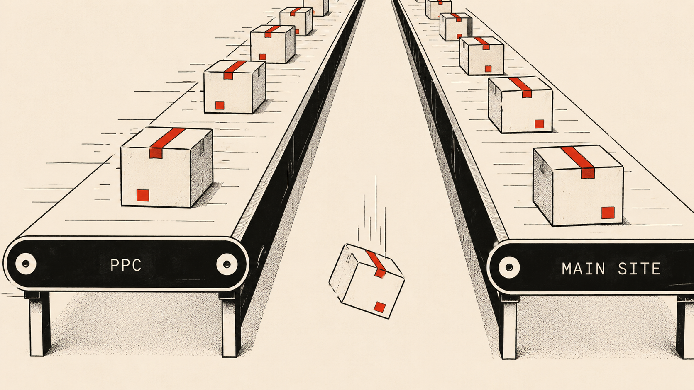

Payplug's Acquisition Machine Is Working. The Handoff Is Not.
A dual GTM motion, a ten-day silence after a demo request, and a retargeting budget generating leads faster than the sales queue can absorb them.

One Trustpilot reviewer summarized Payplug's product marketing challenge more precisely than anything on the homepage does: "tres presents pour vous vendre leur solution de paiement, aux abonnes absents quand vous avez un probleme technique." Present when selling, absent when needed. It lands because it describes something structural rather than a one-off bad experience. And once you see the pattern in the data, it is hard to unsee.
What makes this teardown more interesting than a straightforward critical review is that Payplug is actually doing several things well, and understanding what it is doing well is necessary to understand where the gaps matter. This is also the third teardown in an ongoing series applying the same analytical pass to B2B SaaS and fintech products, and the pattern that keeps appearing is the same: a well-designed marketing motion that breaks down at a specific, identifiable handoff point.
What Payplug actually is
Payplug is not a scrappy fintech. It is an ACPR-licensed payment institution, regulated by the French banking authority since October 2016, processing over ten billion euros in annual transaction volume for approximately 20,000 merchants. It sits inside the BPCE banking group following a majority acquisition in 2016 and a merger with sister fintech Dalenys in 2022. Its product architecture is layered and comprehensive: an Accept layer for deployment and checkout customization, a Convert layer for fraud management and acceptance rate optimization, and a Centralise layer for reconciliation and reporting. It integrates natively with PrestaShop, WooCommerce, Shopify, and Magento. Pricing is public across three tiers.
The customer logos on the main site include Veepee, Back Market, Maisons du Monde, and Allopneus. This is a serious payment infrastructure product for French e-commerce, not a simple payment button for micro-entrepreneurs. Knowing what it actually is makes the gaps more visible, not less.
Two GTM motions running in parallel
Payplug is running two completely different acquisition strategies simultaneously, and they produce two very different first-contact experiences.
The PPC landing page is a conversion-optimized strip: one message, one call to action, no navigation to distract. It routes high-intent visitors into a sales-assisted conversation. The main site at payplug.com/fr serves a broader audience with public pricing, a direct signup path, and technical documentation. These are two defensible strategies for two different audience segments. The problem is what happens in between.
The first-party finding
I submitted a demo request through the PPC landing page. The retargeting system responded within days: ads appeared on YouTube with two distinct calls to action, one for pricing, one for offers. The marketing engine had correctly identified a warm lead and was investing budget to stay visible. Ten days later, no sales representative had made contact. No automated acknowledgment had arrived. No timeline had been set.
PPC path - observed flow
This is the core tension. The PPC path routes what are probably the highest-intent leads in the entire funnel into a sales-assisted queue. The retargeting system then spends budget to keep those leads warm. But if the sales queue cannot respond within 24 to 48 hours, the retargeting spend is buying time with leads who have already moved on to a competitor. Meanwhile, a lower-intent visitor who arrived organically could have signed up, accessed TEST mode, and started integrating the product before the PPC prospect received a first response.
Review - Trustpilot
Tres presents pour vous vendre leur solution de paiement, aux abonnes absents quand vous avez un probleme technique.
What the reviews say
The positive pattern is consistent and earned: easy integration with French e-commerce platforms, clean dashboard, French-language support, a 92.5% average net acceptance rate. For a French merchant selling primarily to French customers, Payplug works well and the reviews reflect that clearly.
Two friction points appear independently across enough reviews to be structural. The first is fund-blocking and account management during compliance reviews. When Payplug freezes funds or closes an account, its response consistently references regulatory obligations and financial partner recommendations. This is not deflection: the ACPR license imposes KYC and anti-money laundering obligations that explain both the heavy document requirements at onboarding and the compliance-driven account actions that upset long-standing merchants. One Capterra reviewer described being a client since 2019 with over 146,000 euros in annual revenue across two sites, only to have their account closed mid-year with funds blocked and no clear explanation. The regulatory floor is real and applies to every licensed payment institution in France. The communication around compliance actions is where improvement is possible without touching the regulatory constraints themselves.
The second is the gap between sales presence and support presence that the Trustpilot reviewer identified. It appears in enough independent accounts, across enough different situations, to be a pattern rather than a coincidence.
The retargeting budget and the PPC spend are generating high-intent leads. The self-serve path on the main site is converting a different segment efficiently. The gap is in the middle: a prospect who came through the paid path needs either a faster human follow-up or an automated bridge to the self-serve path if the sales queue cannot absorb them within 24 to 48 hours. An automated acknowledgment on form submission, with a clear timeline and a link to the self-serve signup as an immediate alternative, would retain the leads the paid acquisition budget is already paying to generate. The cost of that automation is a fraction of the retargeting spend it would protect. This is the same handoff discipline that runs through every teardown in this series: from Lucca's consultant follow-up gap to LumApps's sales-to-delivery alignment problem. The marketing motion and the delivery motion need to be connected at the point that matters.
What I could not verify
Payplug's per-transaction fee structure at each tier was not confirmed from the pricing page directly at time of writing. Figures referenced in this teardown are drawn from public support documentation and independent review sites. The specific revenue segmentation logic applied to demo form submissions was not publicly documented.
This teardown is the third in an ongoing series. What Lucca, LumApps, and Payplug share is a recurring pattern: a well-designed marketing motion that breaks down at a specific, identifiable handoff point. In each case the fix is not a product change. It is a process change that a PMM owns.